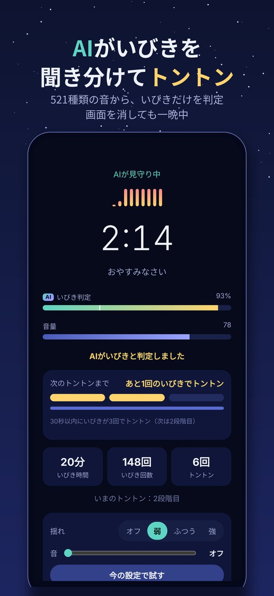
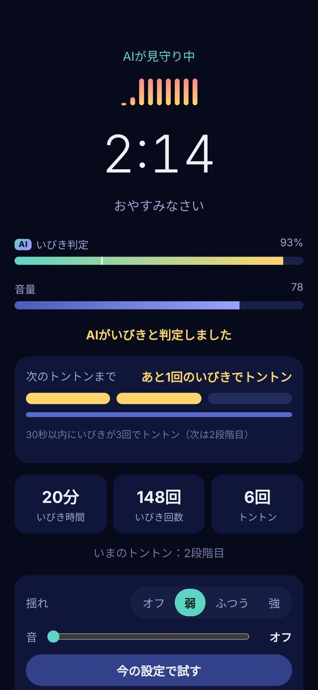
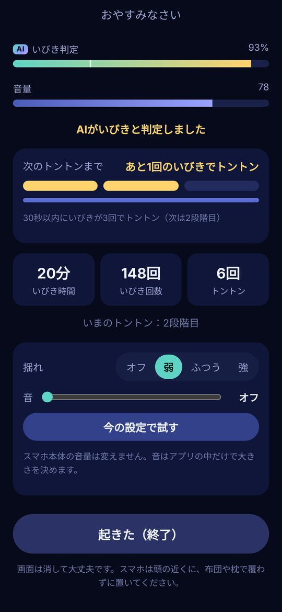
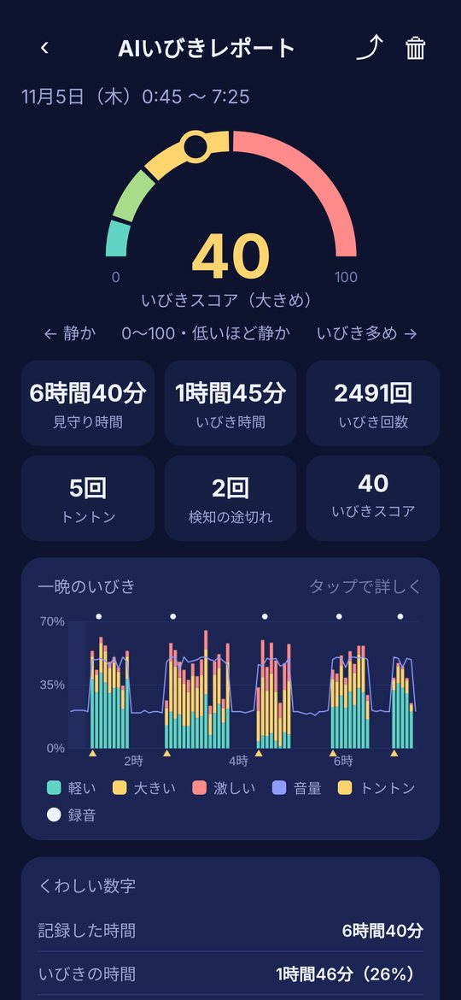
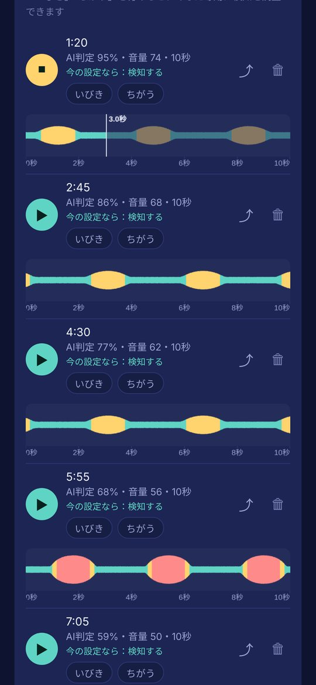
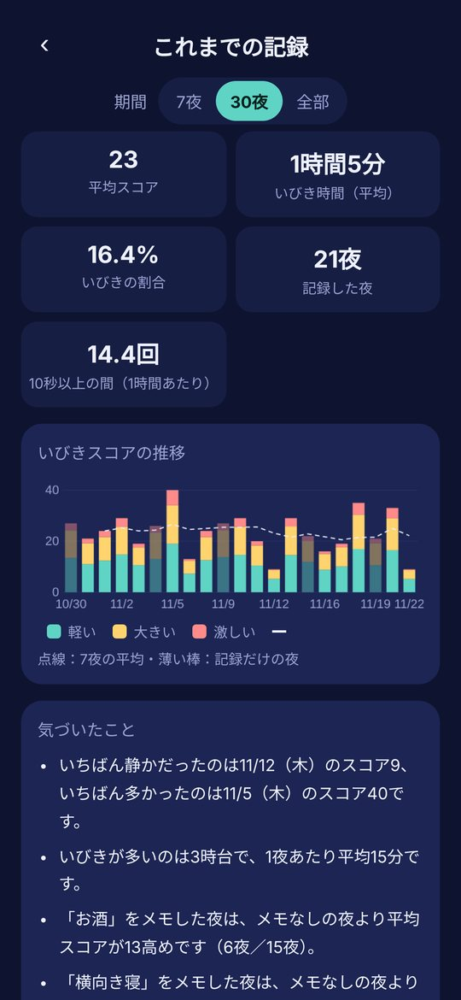

寝室の音をAIが一晩中聞き分け、いびきが続いたら、枕元のiPhoneやApple Watchが「トントン」と振動でお知らせ。隣で寝ている人が肩をトントンする代わりです。

いびきの録音アプリは、朝に聞き返すだけ。AIいびきトントンは、いびきが続いたその場で振動でお知らせし、朝にはくわしいレポートで振り返れます。





難しい設定はいりません。
iPhoneを枕の横などに置きます。布団や枕で覆わないでください。
ボタンを押してそのまま眠ります。画面は消して大丈夫です。
「起きた」を押すと、AIいびきレポートが表示されます。
無料でいびきの検知・トントン・朝のレポートが使えます。もっと詳しく見たい方は、一度の購入でずっと使えるPro版を。
| AIいびきトントン | 録音・分析が中心のアプリ（一般的な例） | |
|---|---|---|
| いびきが続いたら振動で知らせる | ◯ | — |
| Apple Watchで振動 | ◯ | アプリによる |
| 判定はスマホの中だけ | ◯ | アプリによる |
| 料金 | 買い切り | 月額・年額が多い |
はい。いびきの判定・トントン・レポートなど、すべての機能がiPhoneだけで使えます。Apple Watchがあれば、腕の時計でも振動させられます。
送られません。AIの判定も記録・録音の保存も、すべてスマホの中で行います。アカウント登録も不要です。
反応することがあります。「音量の下限」を上げると、離れた場所の小さな音を数えにくくできます。
充電しながらのご利用をおすすめします。その際は熱がこもらないよう、布団や枕で覆わない場所に置いてください。
いいえ。このアプリは医療機器ではなく、病気の診断はできません。日中の強い眠気や、眠っている間に呼吸が止まっていると言われたことがある場合は、医療機関にご相談ください。
本アプリは医療機器ではなく、病気の診断・治療・予防を目的としたものではありません。表示される数値は、スマホのマイクで聞こえた音から算出した目安です。振動によっていびきが止まることを保証するものではありません。